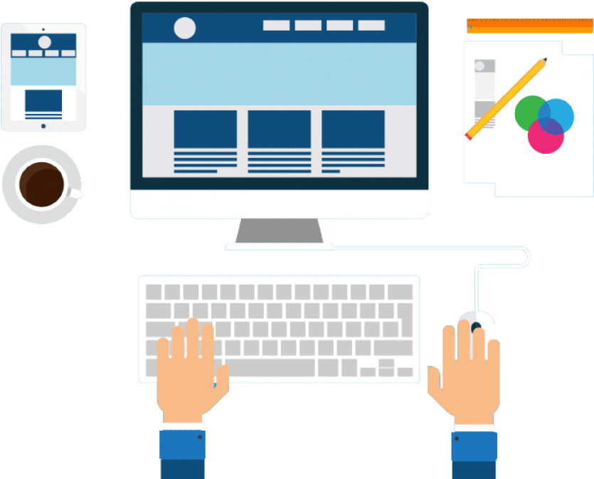

Full stack web developer
Academia Europea Language School Coordinator, passionate about leadership and software development.
Currently exploring the world of web development, learning Javascript, Angular, React, Next, Vue, Node, HTML, CSS, jQuery, Bootstrap, Webpack, Gulp, and MySQL.
With a team of nearly 600 teachers at Academia Europea, I am constantly enhancing my problem-solving, management, and communication skills.
Additionally, I am dedicated to applying my passion for technology to create innovative tools and solutions for the Academia.
Let's connect on Linkedin and share our professional experiences, insights, and networks. I'm always open to connecting with like-minded individuals in the tech community and beyond. Click on the button below to reach my Linkedin profile.